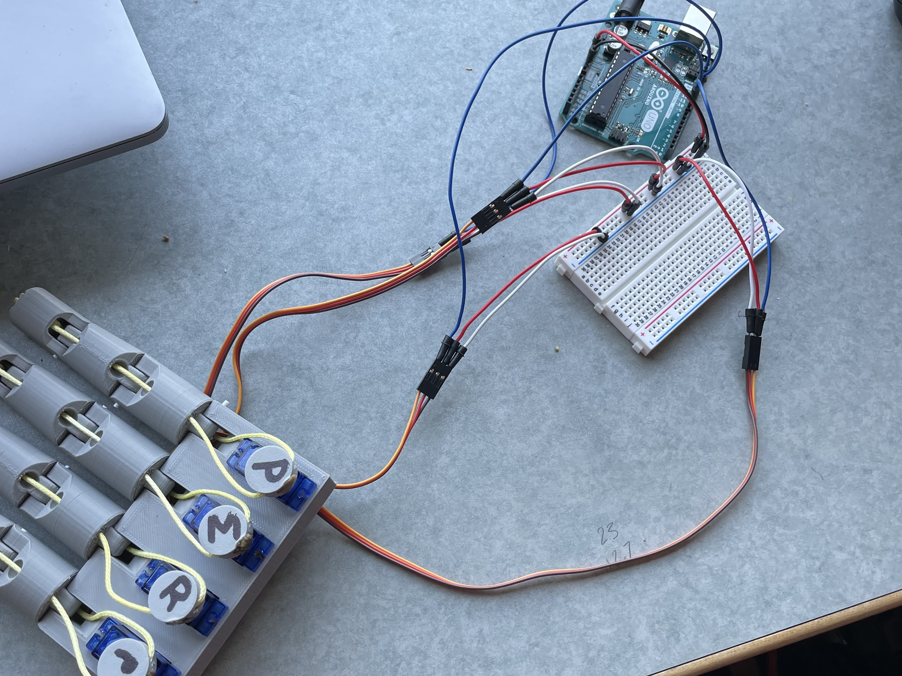
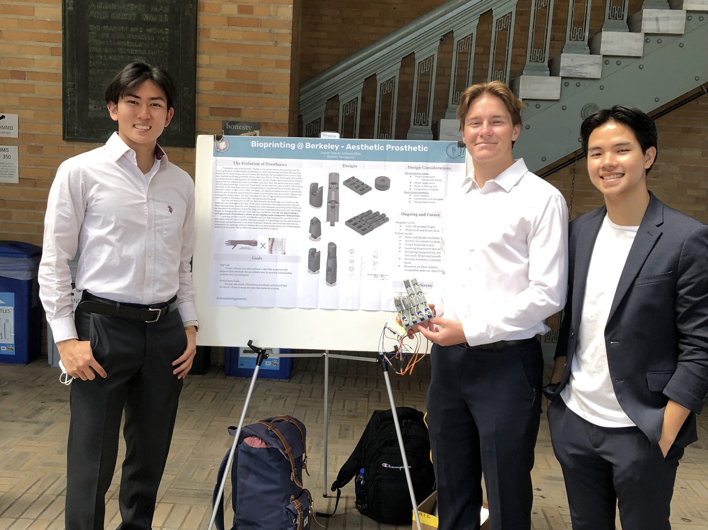
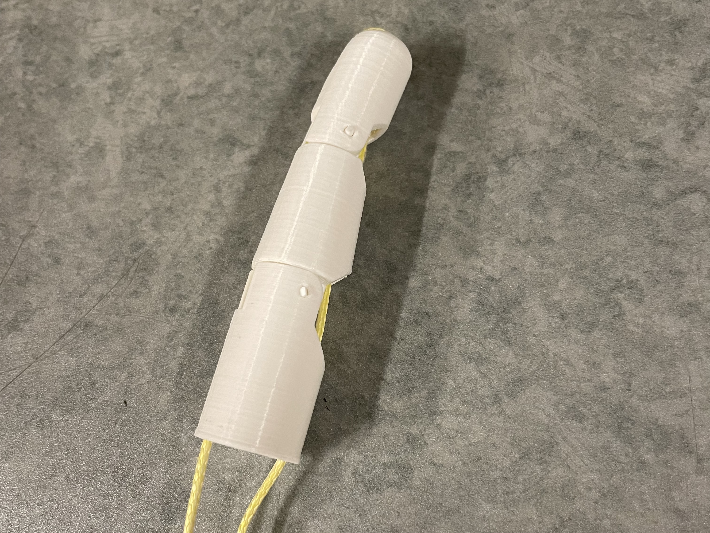
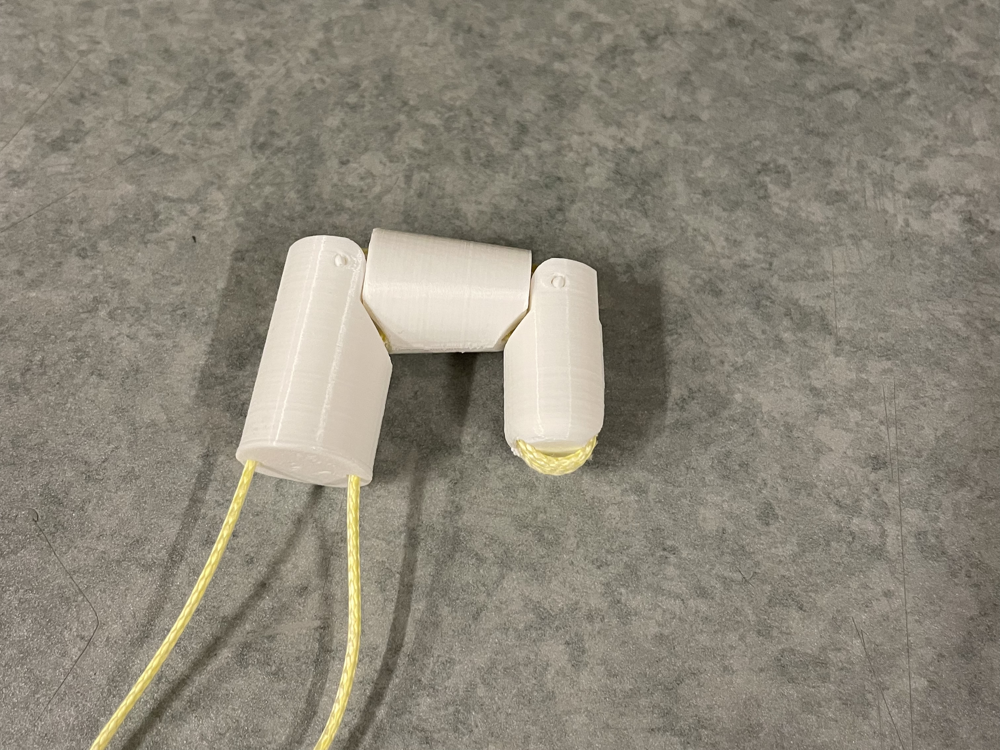

1 / 5

2 / 5

3 / 5

4 / 5

5 / 5

This currently active project was started with the Bioprinting @ Berkeley club in Spring of 2022. The goal of the project is to create a visually realistic prosthetic hand/arm that also has meaningful bionic functionality. We will then partner with the remainder of the bioprinting club to create and attach a skin-like layer to the arm, which will hypothetically help to integrate sensoory capabilities.
This project is still in its prototyping phase. I designed a four finger hand and palm for basic testing, then 3D printed it out of PLA and finished the construction with nylon string, servo motors, and an aurduino. This was our first moving prototype and while it was a success, there is still much more work to be done. Next steps include a redesign for efficiency, adding a thumb, and connecting sensors to trigger motion based on muscle contractions.